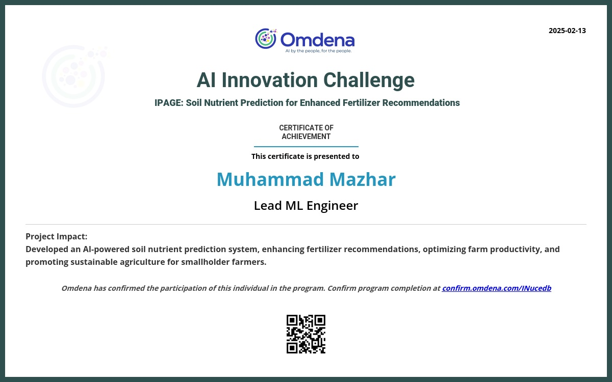
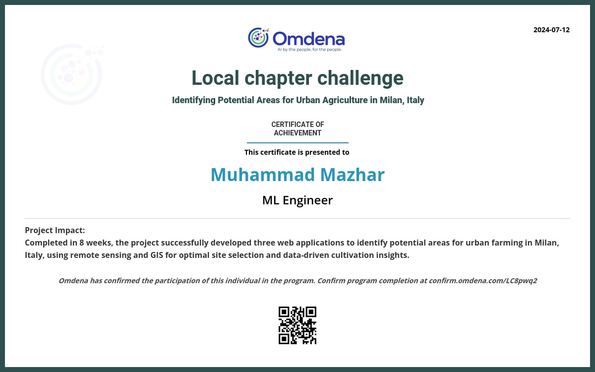
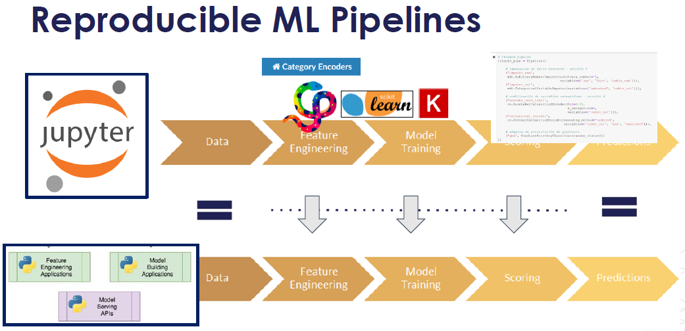
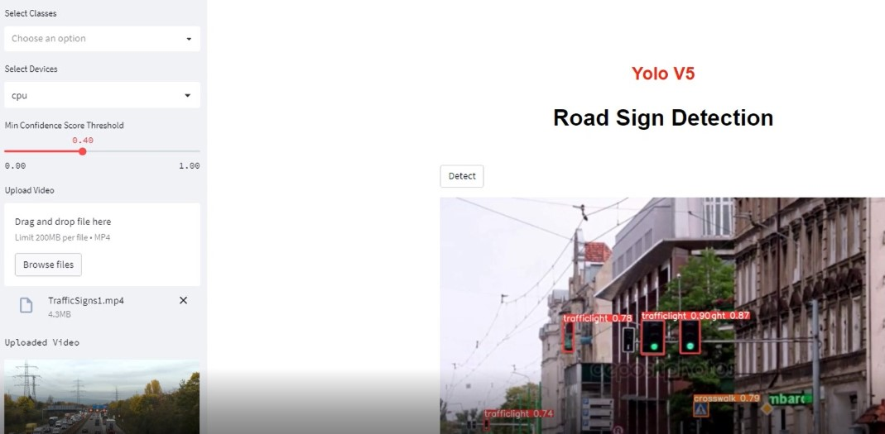
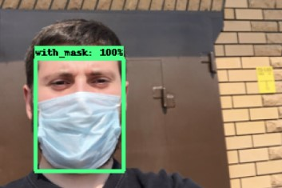
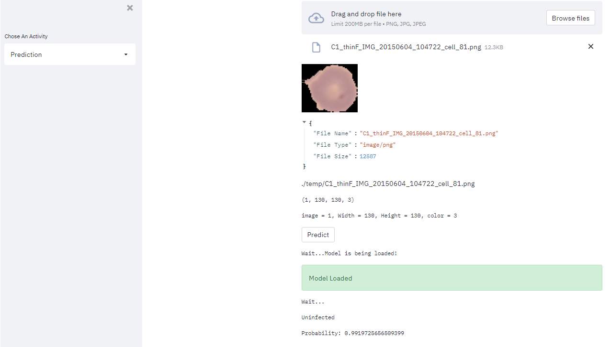
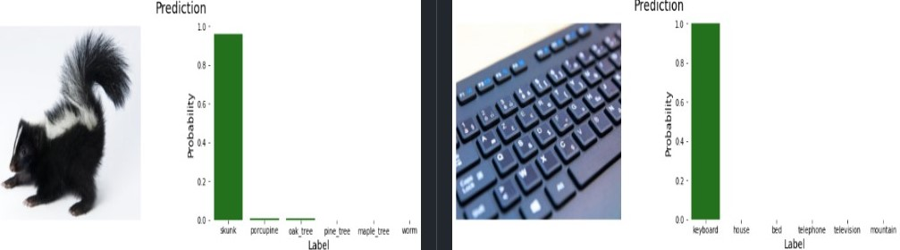

ML/DL and Computer Vision
Soil Nutrient Prediction for Enhanced Fertilizer Recommendations
 Certificate To be Issued Contributed in EDA, Developed Models for SOC, Boron, Experiment Tracking using MLFlow, Zn, API using FastAPI, Streamlit App for PoC.
More on Github Github
3D Roof Reconstruction with Computer Vision for Solar Energy Optimization
PointNet-based segmentation model (PointNetSeg) for point cloud data. The model is designed to classify each point in a point cloud into a predefined set of classes, leveraging a combination of feature and spatial transformations. The PointNetSeg model processes the transformed features to perform point-wise segmentation. The model’s final layer predicts the class of each point. Input: Point cloud of shape (batch_size, num_points, 3), where each point has 3 coordinates (x, y, z). Output: Class scores for each point in the point cloud, with a shape of (batch_size, num_classes, num_points).
More on Github Github
Identifying Potential Areas for Urban Agriculture in Milan - Italy
 Contributed mainly in task 1 of the Omdena challenge, which includes, data collection from Google Earth Engine, EDA and visualization, unsupervised modeling and web app development. Collected dataset from Google Earth Engine is now uploaded to kaggle.
More on Github Github
Regression Model Pipeline
From Data Scraping to Deployment: using, PyPI Model Packaging, FastAPI App deployed on Railway/Render
Since Railway has stopped it's free tier, App is now deployed on Render

 Key Features
More on Github Github
Automatic Number Plate Recognition and EasyOCR
This exercise is an implementation of Automatic Number Plate Recognition (ANPR) using EasyOCR library in Python. The goal of this exercise is to automatically recognize license plate numbers from an image,
live camera or a video by using transfer learning from Pretrained Model SSD MobileNet V2 from Tensorflow Model Zoo. The dataset used in this exercise taken from
kaggle.
The file 1.PrepareDataset.pyperforms Creation of necessary directories for organizing image and annotation files, Extracts image and annotation files from a downloaded zip file i.e.
dataset downloaded from kaggle, Moves the image and annotation files to their respective directories, Splits the image and annotation files into train and test directories using a predefined ratio,
Compresses the train and test directories into a tar.gz file.
2.ColabANPR_and_EasyOCR_ColabRun_v1.ipynb, this does the Tensorflow Object Detection installation on google colab to utilize the power of GPU, create Label Map, Creates TF Records,
Copy Model Config to Training Folder, Update Config For Transfer Learning, Train and Evaluate the model, Load Trained Model From Checkpoint and perform detection tasks from given images, webcam, and
videos. It also converts the model to TFJS and TFLite for further usage.
2.Local_ANPR_Detection_and_EasyOCR.ipynb doest the same things as above but it is for the local machine where GPU is not available.
3.DetectFromImage_EasyOCR.py, 4.DetectFromRealTimeFeed_EasyOCR.py, 5.DetectFromVideos_EasyOCR.py are seperate scripts for object detection from images, webcam,
videos respectively
More on Github Github
Yolo v5 | Streamlit App | Road Sign Detection

The goal of this exercise is to detect road signs from given images, webcam and videos. Dataset is taken from kaggle. Yolov5_Colab_CustomModel_Training.ipynb performs Yolo v5 Custom Training
which involves cloning the github repo of YoloV5, Installing requirements, Unzipping Dataset and Moving data.yaml, Checking and defining the number of classes in our dataset, Model configuration for YoloV5,
Customize iPython writefile so we can write variables, Model Configuration for our Model, Doing Changes in train.py for training, Training, and Inferencing with our custom Trained Model.
More on Github Github
Yolo V5 | Streamlit App | Multiple Object Detection on Pretrained Model
 This Python code is for a Streamlit app that uses YOLOv5, an object detection model, to perform object detection on a user-supplied image or video, or from a live video feed. The app allows the user to select
which device to use for inference (CPU or GPU), the minimum confidence score threshold, and which classes of objects to detect. The app displays the detected objects in the input media and their corresponding
confidence scores. The code imports necessary libraries, such as Streamlit, OpenCV and defines a few helper functions, including one to get the latest folder in a certain directory, which is used to get the
latest output folder for the detection results, and another to get all subdirectories in a certain path. The main function is defined to run the Streamlit app. The app has a sidebar that allows the user to
select the activity (image, video, or live feed), select the device, select the minimum confidence score threshold, and select which object classes to detect. The app also displays the selected input media
and detected objects with their confidence scores.
This Python code is for a Streamlit app that uses YOLOv5, an object detection model, to perform object detection on a user-supplied image or video, or from a live video feed. The app allows the user to select
which device to use for inference (CPU or GPU), the minimum confidence score threshold, and which classes of objects to detect. The app displays the detected objects in the input media and their corresponding
confidence scores. The code imports necessary libraries, such as Streamlit, OpenCV and defines a few helper functions, including one to get the latest folder in a certain directory, which is used to get the
latest output folder for the detection results, and another to get all subdirectories in a certain path. The main function is defined to run the Streamlit app. The app has a sidebar that allows the user to
select the activity (image, video, or live feed), select the device, select the minimum confidence score threshold, and select which object classes to detect. The app also displays the selected input media
and detected objects with their confidence scores.
Streamlit App: Watch Demo
More on Github Github
Face Mask Detection

Goal of this exercise is to detect whether the person is wearing a face mask or not. As usual dataset is taken from kaggle.
2.Colab_Training_and_Detection.ipynb script does the Tensorflow Object Detection installation on google colab to utilize the power of GPU, create Label Map, Creates TF Records,
Copy Model Config to Training Folder, Update Config For Transfer Learning, Train and Evaluate the model, Load Trained Model From Checkpoint and perform detection tasks from given images, webcam, and
videos. It also converts the model to TFJS and TFLite for further usage.
More on Github Github
Image Classification | Detect Infected Blood Cells of Maleria Bacteria
 This is a web application for detecting malaria using a pre-trained deep learning model. The application is built using the Streamlit framework, which makes it easy to create and share interactive data applications. The app starts by importing the necessary libraries, including Streamlit and Keras for loading the pre-trained model. It also imports a custom module called "FilesUpload," which is used to handle file uploads from the user interface. The pre-trained model is loaded from disk, and the image is passed through the model for prediction. The output is displayed as either "Infected/Parasitized" or "Uninfected," along with the probability of the prediction.
Data Source: Official NIH Website
Streamlit App: Watch Demo
More on Github Github
Convolutional neural network (CNN) | CIFAR-100 dataset
 The recognition of images in this project has been done using transfer learning approach. The network built in this project uses the state-of-the-art EfficientNet-B0 which was trained on the popular, challenging and large ImageNet dataset. Transfer learning and the idea of intelligently scaling the network (carefully balancing the network's width, depth and resolution) helped in getting a good performance on this dataset. By just training the model for 11 epochs, the model managed to achieve an accuracy of 81 percent. The training of the model has been done on a GPU and the model has also been tested on some new random images to visualize the top 5 category predictions along with their probabilities.
Data Source: Kaggle/Cifar-10 and Cifar-100 datasets The dataset contains 3 folders - Meta, Train, Test.
More on Github Github